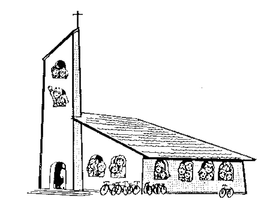

.: WERKING & INSCHRIJVING:.
Als parochie-verantwoordelijken zijn we ervan overtuigd dat “geloof” en meer bepaald de persoon en de boodschap van Jezus Christus, een belangrijke, positieve en bevrijdende rol kunnen spelen in de groei naar een volwassen en gelukkig mens.
Niemand hoeft echter deze overtuiging te delen. We leven in een pluralistische samenleving, waarin gelovigen, niet-gelovigen en anders-gelovigen broederlijk naast elkaar leven.
Overigens zijn geloof en christendom geen absolute voorwaarden om gelukkige mensen te kunnen zijn... En we zijn vrije mensen ...
Vooral voor dat laatste vragen we uw extra aandacht.
Geen enkele ouder dient zich “verplicht” te voelen om zijn kinderen gelovig op te voeden, hen te laten dopen en vormen. Zoiets doe je enkel als dit ook je eigen diepste overtuiging is : alles wat je belangrijk vindt in het leven, daar wil je je kinderen graag in laten delen. Dat geldt ook op het gebied van levensvisie. Maar het is niet erg zinvol als ouders hun kinderen laten dopen of vormen “om niet uit de toon te vallen”, “omdat iedereen het doet”, of omdat de grootouders van het kind dat zo willen, of omwille van het feest...
Misschien vindt u het zinvol om uw kind te laten zegenen. Daarbij kan u ervoor kiezen om Gods zegen te vragen over jouw zoon of dochter en hem/haar verder te begeleiden in het leven. Deze zegening vergt een minimale voorbereiding en vindt plaats in de kerk van Hijfte.
Indien u en uw kind echter bewust kiezen voor een gelovig-christelijke levensopvatting, dan is het vormselsacrament een gepast ritueel. Dit wordt voorafgegaan door een intensief catechesetraject dat gebeurt in de kerkplek waar men woont. Wij durven u dan ook - vriendelijk en met aandrang - vragen om hierin consequent te zijn. Dan durven wij ook vragen om aan de voorbereiding op het Heilig Vormsel en de Plechtige Communie van uw kind voorrang te geven boven andere activiteiten waaraan het op dat moment misschien kan deelnemen.
Hier vind je alles over onze werking en hoe de inschrijving voor het vormsel in Wachtebeke verloopt.
